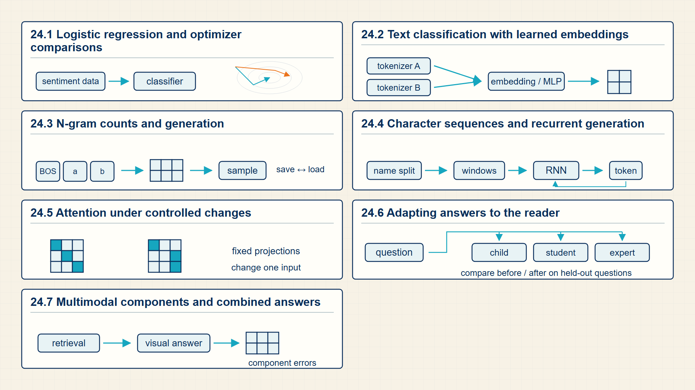

24 Computational Labs: Verifying the Math in Code
The calculations become reliable only when they can be reproduced in code. These labs expose the inputs, intermediate tensors, losses, gradients, and outputs of the main workflows.
The course notebooks turn the preceding calculations into complete workflows: linear classification, text classification, attention, QLoRA, character-level recurrence, n-gram modeling, and vision-language inference.
In code, each lab begins with the imports used by its source notebook, then adds assert, torch.allclose, plots, or printed tensor metadata to verify the computation.
Chapter 24 develops one required stage of the guide’s computation.

The numbered panels correspond to the chapter sections and show how each local result supplies the next operation.
24.1 Lab: Building Logistic Regression and SGD from Scratch
Reproduce the two-feature classifier from the PyTorch notebook, verify the decision boundary, and compare manual and autograd gradients.
- Trace: A step-by-step path from input object through computation to output, loss, gradient, or cache state.
- Implementation mapping: The connection between mathematical notation, tensor dimensions, dtype, and code object.
Start with two-feature examples so the forward pass can be checked by hand. Record the feature batch, logits, binary loss, gradients, and one SGD update before comparing the manual result with PyTorch autograd.
Then vary learning rate or weight decay while keeping the data split fixed. The comparison should show how an update setting changes training loss and held-out classification errors.
A causal-language-model lab should produce one vocabulary-logit vector per batch row and token position.
Lab logits dimensions:
\[ \operatorname{dims}(\mathrm{logits})=[B,T,V] \tag{24.1}\]
where B is batch size; T is sequence length; V is vocabulary size.
Every supervised token position is a multiclass prediction over the vocabulary.
These dimensions should be checked before flattening logits for token cross-entropy.
Notebook loss calculations should average only the token positions included by the mask.
Masked lab loss:
\[ \mathrm{loss}=\frac{\sum_t\mathrm{mask}_t\,\mathrm{CE}_t}{\sum_t\mathrm{mask}_t} \tag{24.2}\]
where \(mask_{t}\) is indicator that position t contributes to the loss; \(CE_{t}\) is cross-entropy at position t.
The numerator accumulates supervised losses and the denominator counts supervised positions.
This is the arithmetic students should verify when padding or ignored labels are present.
Example: Lab logits dimensions
With \(B=2\), \(T=5\), and \(V=1000\), the logits have dimensions \([2,5,1000]\).
Example: Masked lab loss
For CE values 1, 3, 9 and mask [1,1,0], the loss is \((1+3)/2=2\).
- Train a binary linear classifier with BCE-with-logits or a multi-class classifier with cross-entropy.
- Print the dimensions of the feature batch, target vector, logits, scalar loss, and gradients.
- Verify that gradients are cleared between optimizer updates.
- Plot training loss beside one held-out metric and inspect one false positive and one false negative.
Code example: Logistic-regression forward, loss, and backward checks
import torch.nn as nn
import torch
# Rows are examples; columns are features.
X = torch.tensor([[1.0, 0.0], [0.0, 1.0]])
y = torch.tensor([1.0, 0.0])
w = torch.tensor([0.2, -0.1], requires_grad=True)
b = torch.tensor(0.0, requires_grad=True)
# The affine score is the logistic-regression logit.
logits = X @ w + b
loss = torch.nn.functional.binary_cross_entropy_with_logits(logits, y)
loss.backward()
assert logits.shape == (2,)
assert w.grad.shape == w.shapeThe assertions verify one score per row and one gradient per trainable parameter.
The lab must add training history and decision-boundary plots before drawing convergence conclusions.
This baseline exposes every value used by a gradient update. The next lab applies the same path to text features and held-out evaluation.
24.2 Lab: End-to-End Text Classification and Evaluation Pipeline
Build the assignment pipeline from news text through subword tokens and Word2Vec pooling to four-class MLP logits and error analysis.
This workflow carries one text dataset from raw examples to a held-out decision. Tokenization creates IDs, the embedding table creates token vectors, pooling creates one vector per document, and an MLP produces four class logits.
Report both an intermediate representation and an evaluation result. Inspecting nearest neighbors may help diagnose embeddings, but the lab result is the classifier’s held-out predictions and error pattern.
- Create a train, validation, and test split for the text examples.
- Report vocabulary size, embedding width, pooled-document dimensions, and class-logit dimensions.
- Train a four-class MLP head and record validation loss and F1 or accuracy.
- Inspect several incorrect predictions and connect each error to the tokenized input or representation.
Code example: Pooled token vectors and four-class MLP logits
import torch
import torch.nn as nn
# A real run obtains these token vectors from the trained Word2Vec model.
token_vectors = torch.tensor([
[[1.0, 0.0, 0.5], [0.5, 1.0, 0.0]],
[[0.0, 1.0, 0.5], [1.0, 0.5, 0.0]],
])
article_vectors = token_vectors.mean(dim=1)
classifier = nn.Sequential(nn.Linear(3, 8), nn.ReLU(), nn.Linear(8, 4))
labels = torch.tensor([0, 2])
logits = classifier(article_vectors)
loss = nn.CrossEntropyLoss()(logits, labels)
assert article_vectors.shape == (2, 3)
assert logits.shape == (2, 4)
print(loss.item())The dimensions connect token embeddings to one four-class prediction per article.
The real assignment trains Word2Vec and the classifier on AG News rather than using fixed toy vectors.
The classification pipeline ends with a loss and metrics. Attention makes the sequence representation itself inspectable.
24.3 Lab: Tracing Scaled Dot-Product Attention and Causal Masks
Implement scaled dot-product attention, verify row normalization, and visualize how a changed token alters the attention matrix.
Save four aligned arrays for one short sequence: unmasked scores, masked scores, row-wise softmax weights, and weighted value outputs. Label the query and key axes with token positions so a masked score cannot be mistaken for a usable attention weight.
Run the calculation again after replacing one content token. Compare its input vector, projected query/key/value vectors, affected score row and column, and output context vectors. This separates a changed tensor value from an interpretation of a heatmap.
An attention lab should match the hand-computed attention output and the library output.
Attention lab output:
\[ O=\operatorname{softmax}\left(\frac{QK^{T}}{\sqrt{d_k}}+M\right)V \tag{24.3}\]
where Q is query vectors for the positions being updated; K is key vectors for the positions that may be read; V is value vectors mixed after the attention weights are computed; \(d_{k}\) is query/key vector dimension used for scaling; M is attention mask added to disallowed scores before softmax; O is output vectors after the weighted sum of values.
The lab forms scores from query-key dot products, adds the mask, normalizes each query row with softmax, and uses the resulting weights to average value vectors.
A mismatch usually means a dimension, mask, scaling, or softmax-axis error.
Example: Attention lab output
For one query with weights [0.25,0.75] and scalar values [2,6], \(O = 0.25·2 + 0.75·6 = 5\).
- Compute query, key, and value projections for a short token sequence.
- Apply the causal mask before row-wise softmax and verify that masked positions receive zero probability.
- Check that every visible attention row sums to one.
- Compare the one-head arrays before extending the display to multiple heads.
Code example: Scaled attention values and row-normalization checks
import torch
# One query, two keys, and scalar values.
Q = torch.tensor([[1.0, 0.0]])
K = torch.tensor([[1.0, 0.0], [0.0, 1.0]])
V = torch.tensor([[2.0], [6.0]])
scores = Q @ K.T
weights = torch.softmax(scores, dim=-1)
output = weights @ V
assert scores.shape == (1, 2)
assert output.shape == (1, 1)The output dimensions and row sums verify the core attention calculation.
A complete lab also plots the matrix and repeats the calculation after changing one token.
The saved score, mask, weight, and context tensors make attention a calculation that can be checked position by position.
24.4 Lab: Executing QLoRA Fine-Tuning on a Transformer Checkpoint
Prepare instruction-answer examples, configure four-bit loading and LoRA adapters, and report trainable parameters and evaluation changes.
Use instruction-answer examples to inspect a four-bit base model with low-rank adapter matrices. The base weights remain frozen; the optimizer tracks only the adapter parameters and their state.
A small run is sufficient when hardware is limited. The report should distinguish trainable parameter count, base-weight storage, training loss, and behavior on held-out prompts rather than treating a generated answer as the only result.
- State the base checkpoint, tokenizer, dataset, and target LoRA modules.
- Count trainable adapter parameters as a fraction of total parameters.
- Reconstruct one quantized value from a code and its stored scale.
- Compare the same prompt before and after adaptation, then note one overfitting or safety risk.
Code example: LoRA parameter count and affine dequantization checks
import torch
# A frozen 4 by 4 weight receives a rank-1 update.
d_in, d_out, rank = 4, 4, 1
A = torch.zeros(rank, d_in, requires_grad=True)
B = torch.zeros(d_out, rank, requires_grad=True)
trainable = A.numel() + B.numel()
assert trainable == rank * (d_in + d_out)
# Affine quantization reconstructs a value from an integer code.
scale, q, zero_point = 0.1, 13, 3
x_hat = scale * (q - zero_point)
assert x_hat == 1.0The assertions verify the low-rank parameter formula and one dequantization step.
The full notebook adds pretrained-model loading, instruction data, training, and evaluation.
Adapter training changes a small parameter set while the base model remains fixed. Recurrent generation provides a contrasting sequence-model lab.
24.5 Lab: Implementing a Character-Level RNN and Generation Loop
Create sequence batches, train the character LSTM, and compare greedy, random, and top-k generation.
A character RNN receives one character ID at a time, updates its hidden state, and predicts the next character. Training uses shifted character sequences; generation feeds each selected character back into the next recurrent step.
Compare greedy decoding with a sampled run from the same prefix. Keep generated text beside the training loss so repeated or incoherent output can be related to the state model and decoding rule.
- Create shifted character-input and target sequences.
- Report input, hidden-state, and vocabulary-logit dimensions.
- Train a small RNN or LSTM and record loss over time.
- Generate from one fixed prefix with greedy decoding and one sampling setting.
- Identify one dependency the recurrent state retains poorly or one repeated-generation failure.
Code example: Character LSTM state and top-k sampling
import torch
import torch.nn as nn
vocab_size, hidden_width = 6, 8
inputs = torch.nn.functional.one_hot(
torch.tensor([[0, 1, 2]]),
vocab_size,
).float()
lstm = nn.LSTM(vocab_size, hidden_width, batch_first=True)
output_head = nn.Linear(hidden_width, vocab_size)
states, recurrent_state = lstm(inputs)
logits = output_head(states[:, -1])
top_values, top_ids = torch.topk(logits, k=3, dim=-1)
probabilities = torch.softmax(top_values, dim=-1)
assert states.shape == (1, 3, hidden_width)
assert top_ids.shape == (1, 3)
print(top_ids, probabilities)The last recurrent state produces one distribution over the character vocabulary.
Training and recurrent-state carryover must be added before the sample represents a learned name model.
The recurrent loop exposes the serial form of next-token prediction. An n-gram model provides the fixed-history comparison.
24.6 Lab: Training an N-Gram Language Model and Perplexity Evaluator
Build padded n-grams and a vocabulary with NLTK, fit maximum-likelihood counts, inspect unknown tokens, and generate text.
An n-gram model estimates the next token from counts over a fixed preceding history. This lab makes the count table, conditional probability, unknown-token rule, and perplexity calculation explicit before comparing them with learned sequence models.
Use the same small corpus for every stage: pad sentence boundaries, build a vocabulary, replace rare tokens with an unknown token, count histories and continuations, then generate from the resulting conditional distribution.
- Build padded n-grams from a small tokenized corpus with NLTK.
- Report vocabulary size, history counts, continuation counts, and one conditional probability.
- Show how an unknown or unseen history is handled by the smoothing rule.
- Generate a short continuation and calculate held-out perplexity.
- Explain the fixed-context limitation exposed by a sparse or unseen history.
Code example: Padded bigram counts and maximum-likelihood probability
from collections import Counter
sentences = [["<s>", "the", "cat", "</s>"], ["<s>", "the", "dog", "</s>"]]
bigrams = Counter(
(left, right)
for sentence in sentences
for left, right in zip(sentence, sentence[1:])
)
contexts = Counter(left for left, _ in bigrams.elements())
probability = bigrams[("the", "cat")] / contexts["the"]
assert probability == 0.5
print(bigrams, probability)The context the is followed once by cat and once by dog, giving probability one half.
The NLTK notebook adds vocabulary cutoffs, unknown tokens, smoothing alternatives, and generation.
Counts, smoothing, and perplexity make the fixed-history baseline measurable before a neural model replaces it.
24.7 Lab: End-to-End Multimodal Vision-Language Inference Trace
A vision-language inference pipeline converts pixels and text prompts into tensors, generates output token IDs, and decodes those IDs into a caption or answer.
A vision-language pipeline converts pixels and a text prompt into processor outputs, then generates token IDs and decodes them into a caption or answer. The model has the same broad structure as a language system, but its first representation is an image tensor or patch sequence.
Keep the input image, prompt, output IDs, decoded text, and error category together in the result. Captioning and visual question answering should be evaluated separately because they ask for different outputs from the same visual evidence.
- Identify the image processor, visual encoder, projection or fusion step, language decoder, and decoding rule.
- Print image, patch or visual-feature, prompt-token, and output-token dimensions.
- Compare one correct and one incorrect output, naming whether the failure concerns objects, attributes, counting, or the question condition.
Code example: Patch tokens as inputs to a vision-language pipeline
import torch
image = torch.arange(16.0).reshape(1, 1, 4, 4)
patches = image.unfold(2, 2, 2).unfold(3, 2, 2)
patches = patches.contiguous().reshape(1, 4, 4)
projection = torch.ones(4, 3)
patch_tokens = patches @ projection
assert patches.shape == (1, 4, 4)
assert patch_tokens.shape == (1, 4, 3)
print(patch_tokens)The image becomes four patch positions with three-coordinate representations.
The homework uses pretrained captioning and VQA models; this local check isolates the representation step.
The multimodal trace reuses the same representation, scoring, and output-selection pattern with a different input modality.
24.8 Visualizing End-to-End Course Lab Pipelines
A complete lab trace follows stored inputs through outputs, loss, gradients, and verified results.
A complete training trace connects model inputs and parameters to a scalar loss, then follows the backward calculation into stored parameter gradients.

The loss is the starting value for reverse-mode differentiation. Each local derivative contributes to the gradients that the optimizer reads during the update.
The labs should be read as executable traces from input tensors to outputs, losses, gradients, or cache state.
A complete reading path now runs from raw examples through representations, architectures, objectives, updates, deployment state, and PyTorch implementation.